在传统的运维工作中，单台服务器部署Zabbix Agent看似仅需简单几条命令，实则需要贯穿多道流程，涉及JumpServer资产查询、服务器登录操作、程序安装配置、Zabbix平台主机创建等环节。以前，这些操作均需要运维管理人员手动逐项执行，流程冗余、效率低下，而且很容易出现人为疏漏。
将WorkBuddy与JumpServer Skills能力接入到运维流程，可以实现智能化运维，运维人员无需进行繁琐操作，仅需通过自然语言就可以实现运维目标，完成各类运维工作。比如，运维人员可以直接描述指令：“帮我给测试环境的Linux服务器安装Zabbix Agent，并接入Zabbix监控。”指令下发后，WorkBuddy负责智能解析运维任务、拆解执行步骤、汇总最终执行结果。JumpServer Skills负责提供账号权限内的资产与操作上下文，二者协同完成全流程的自动化运维。同时，WorkBuddy仅作为新的任务执行入口，并不会突破原有的权限体系，不会获取任何额外的操作权限，从根源上保障了系统安全性。本文为您详细介绍“WorkBuddy+JumpServer Skills”的技术落地方案、典型场景及具体实现步骤。
一、AI运维联合方案
在“WorkBuddy+JumpServer Skills”联合技术方案中，WorkBuddy作为核心编排层，能够将模糊的自然语言运维请求，智能拆解为资产查询、环境检查、变更操作、结果验证等执行步骤，并且根据任务类型自动调用对应的Skills、运维脚本或第三方API，从而实现全流程的统筹调度。
JumpServer Skills作为资产权限枢纽，拥有权限管控与资产匹配的核心能力，查询并展示当前运维账号权限内的服务器资源和信息，以及AI可操作的资产范围、可执行的操作类型，该权限完全由JumpServer的账号权限体系决定，杜绝了权限失控的问题。
运维脚本与外部API作为执行终端，承担了具体的实际操作任务。涵盖软件安装、配置修改、调用Zabbix API、创建主机等落地操作。同时，该方案支持WorkBuddy根据现场运维环境自适应生成脚本，且所有上线脚本均明确划定执行范围、配置失败处理方案与结果验证标准，保障了操作的稳定性。整体实现链路如下图所示。
鉴于AI可能会存在一些算法幻觉风险，出现错误命令、匹配错误资产、误判故障原因等问题，整套方案需要严格依托JumpServer的权限与审计体系，构建安全边界，杜绝AI独立操作风险，其核心规范如下：
■ 权限最小化：使用独立账号，并且遵循最小权限原则，只允许AI访问已授权资产；
■ 人工复核：软件安装、服务重启、批量配置变更等高风险操作，执行前必须经过人工确认；
■ 全程审计留痕：所有AI运维操作均通过JumpServer执行，完整保留操作日志，支持全程追溯；
■ 操作合规管控：对话禁止录入敏感凭据，如不慎提交，应及时变更凭据并校验操作结果。
二、AI运维典型场景落地
场景一：服务器Zabbix Agent部署，并接入监控
1. 提交自然语言任务
服务器新增接入Zabbix Agent监控时，运维人员可以向WorkBuddy下发指令（不携带密钥等敏感信息），例如：
“使用jumpserver-skills帮我看看10.1.14.47有没有安装上zabbix agent？如果没有帮我配置好zabbix agent并使用Zabbix Connector技能在zabbix server中注册这台资产”
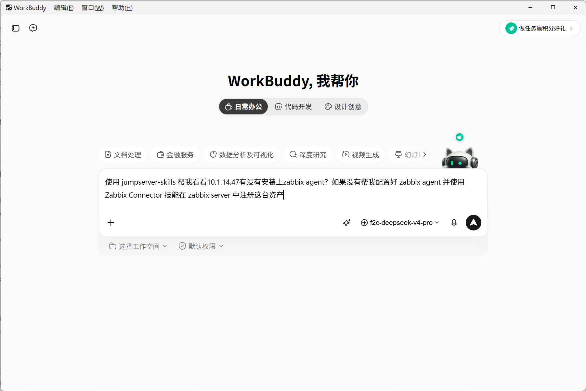
2. 目标资产权限校验
WorkBuddy自动调用JumpServer Skills，查询当前账号可访问的Linux资产，并且按照IP匹配到服务器10.1.14.47。若账号无该资产的访问权限，流程自动终止，规避越权操作。
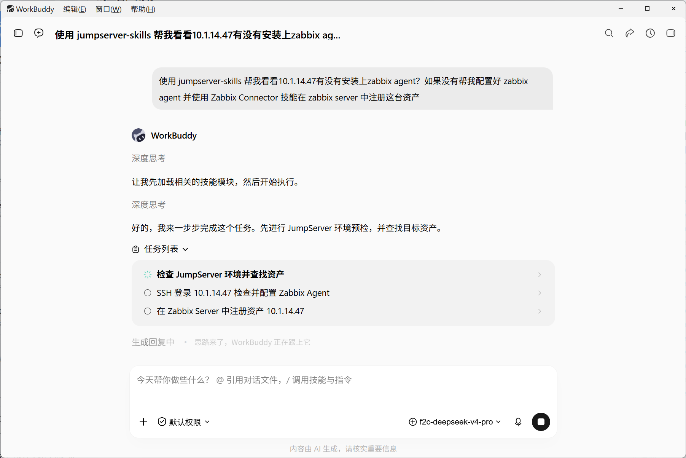
3. 安装前预检查
部署Zabbix Agent前，需要先确认操作系统、Agent安装状态、服务状态以及与Zabbix Server的网络连通性。常见检查命令包括：
cat /etc/os-release
systemctl status zabbix-agent2
ping zabbix-server
预检查的结果将决定系统后面的动作。如果Agent已经安装，就不必重复改动；如果仓库不可用或网络不通，将先报告阻塞原因。
4. 自动化安装与配置
确认执行后，WorkBuddy会根据系统版本安装zabbix-agent2，填入配置信息，启动服务并设置开机启动。配置完成不等于任务完成，流程还需要检查服务状态、监听端口和日志，确认Agent没有因为Hostname、网络或权限问题反复退出。配置内容类似为：
Server=zabbix-server
ServerActive=zabbix-server
Hostname=web-01
5. 在Zabbix中注册主机
服务器侧检查通过后，WorkBuddy自动调用Zabbix Connector，创建监控主机并设置主机组、模板和标签。Zabbix Connector使用的API Token同样遵守最小权限，仅开放主机管理相关接口权限。
6. 返回可核对的结果
WorkBuddy输出完整任务报告，包括目标资产、实际变更、服务状态、Zabbix注册结果和异常信息等，方便管理员根据报告快速判断任务是否真的实现闭环落地。
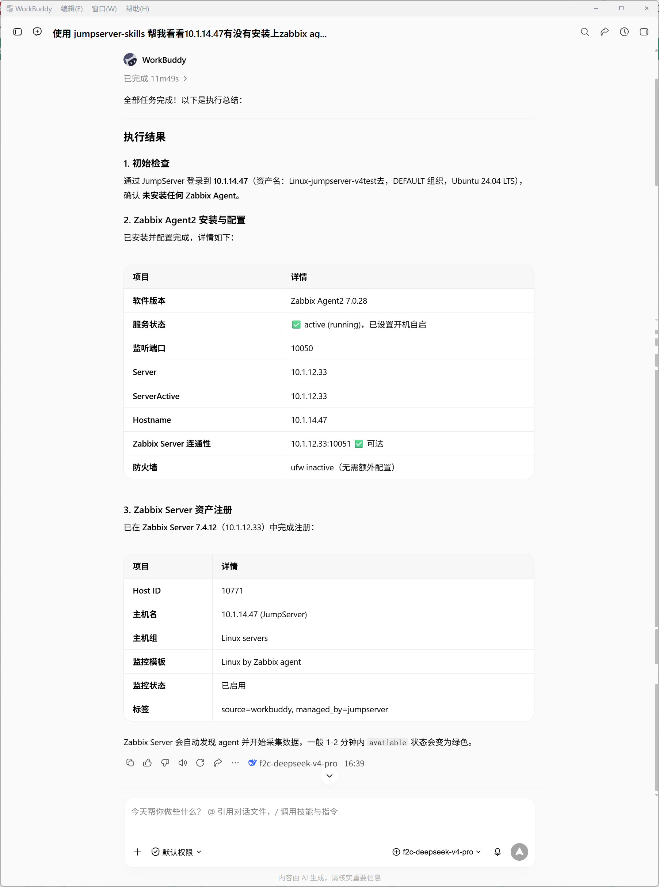
案例二：服务器日常巡检
日常巡检适合从只读任务开始，也是验证整套方案最稳妥的入口。用户可以向WorkBuddy下发指令：“帮我巡检测试环境所有 Linux 服务器。”
WorkBuddy通过JumpServer Skills查询当前账号有权访问的Linux资产，确认巡检范围，再生成只读命令或脚本。巡检结果可以按照主机汇总，也可以重点标记超出阈值的项目。这类任务需要严格限制可执行命令的集合，禁止读取敏感配置、密钥信息，避免敏感数据泄露。
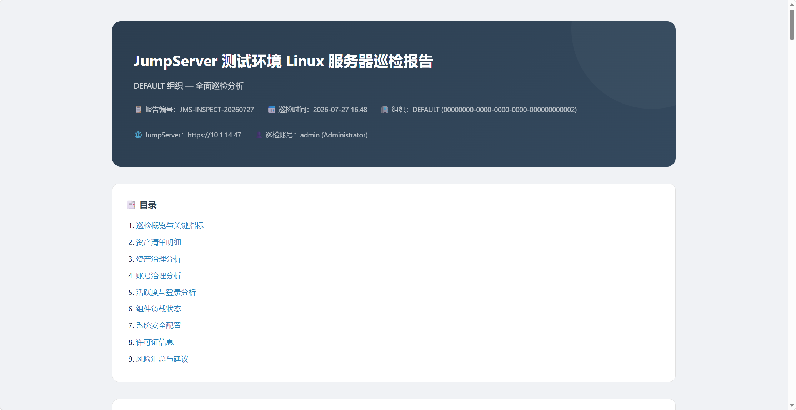
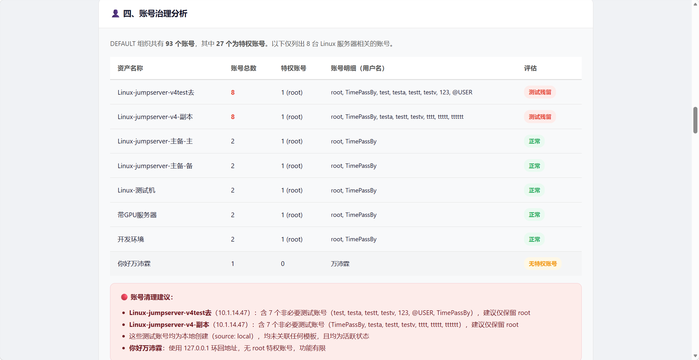
案例三：Zabbix告警及辅助分析
当监控触发告警“High swap space usage (less than 50% free)”时，运维人员可以下发指令让WorkBuddy针对具体资产收集证据，例如：“使用jumpserver-skills分析10.1.14.47 (JumpServer) High swap space usage (less than 50% free) 的原因”。
WorkBuddy将自动执行top、ps aux、vmstat、journalctl等排查命令，查看内存压力、进程占用和近期系统日志等信息，汇总排查线索，根据实际的输出结果给出判断。
注意，诊断动作和处置动作最好拆分为两个任务，AI仅负责信息采集、线索整理，重启服务、参数调整、扩容等高风险操作由运维人员评估后单独发起任务，防止在信息不全情况下AI盲目执行变更。
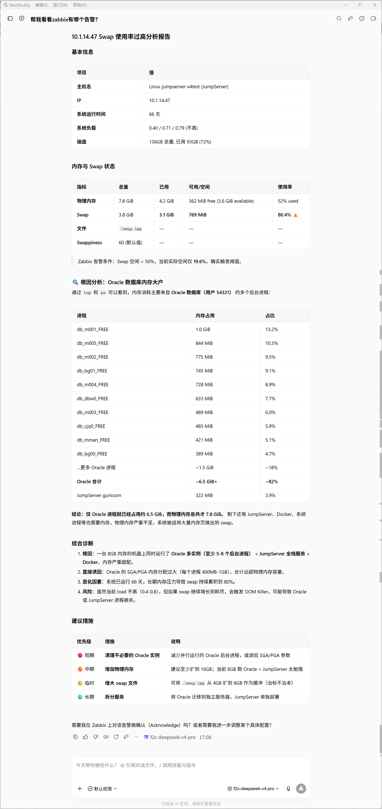
案例四：批量部署软件
除Zabbix Agent之外，同样的流程也可以用于Node Exporter、Filebeat、Fluent Bit或Telegraf等组件。批量部署软件的关键不是软件名称，而是固定范围确认、预检查、执行和验证的流程。
示例指令1：
部署Node Exporter时，可以给出以下指令：“给测试环境的Linux服务器安装Node Exporter。先列出匹配资产和计划使用的端口，确认后再执行。”WorkBuddy接受到指令后，将会检查系统架构和端口占用情况，下载安装包，并配置systemd，启动服务并验证采集端点。
示例指令2：
部署日志采集Agent时，需要先确认日志路径、读取权限、输出地址和数据脱敏要求。可以给出以下指令：“给测试环境服务器部署日志采集Agent。先检查现有采集程序和日志路径，不要重复安装；提交资产清单和配置差异后等待确认。”这样的描述，比“给所有服务器装上”的指令多了约束条件，可以避免重复安装、端口冲突和采集敏感日志等常见问题。
案例五：自动生成运维日报
依托JumpServer的审计日志功能，系统已经记录了登录、操作和命令审计数据，WorkBuddy可以通过“使用JumpServer Skills生成昨天服务器运维日报”的指令按时间和资产范围整理这些记录，实现运维工作的自动化汇总。WorkBuddy会拉取指定时间段内的资产登录和操作审计记录，整理生成摘要报表，方便日常查看。原始审计日志持续保存在JumpServer中，满足安全追溯需求。
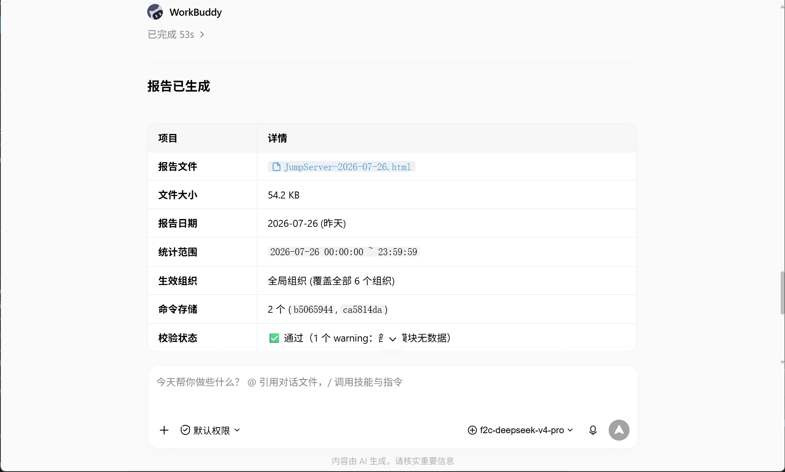
三、AI运维联合方案实现步骤
以下是“WorkBuddy+JumpServer Skills”整套AI运维联合方案的落地实施流程：
1. 安装JumpServer Skills
准备JumpServer Skills安装包（https://github.com/jumpserver-east/skills/releases/download/jumpserver-connect-info/jumpserver-skills.zip），登录至WorkBuddy，依次选择“技能”→“添加技能”→“上传技能”页面，选择安装包ZIP文件完成安装。
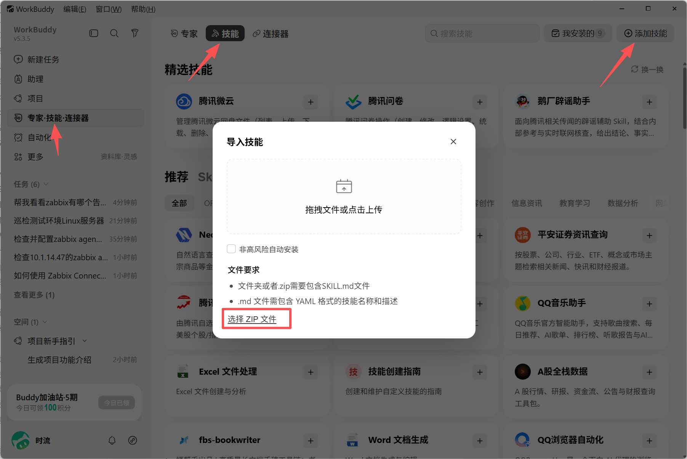
2. 配置JumpServer连接信息
在JumpServer中新建独立服务账号，分配目标资产访问和操作权限，并创建该账号对应的Access Key/Secret Key（即AK/SK）。
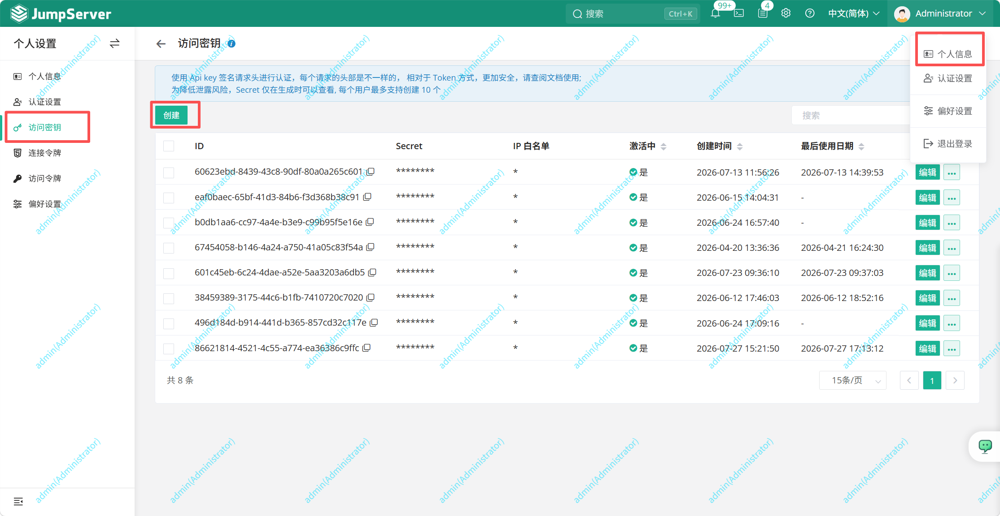
在WorkBuddy中下发配置指令完成对接，配置请求可以写成：“帮我配置JumpServer Skills，我的JumpServer地址为https://10.1.14.47，我的AK/SK分别是 8xxxxxxxxxxxxxxxxffc 和 QxxxxxxxxxxxxxxxxxU。”
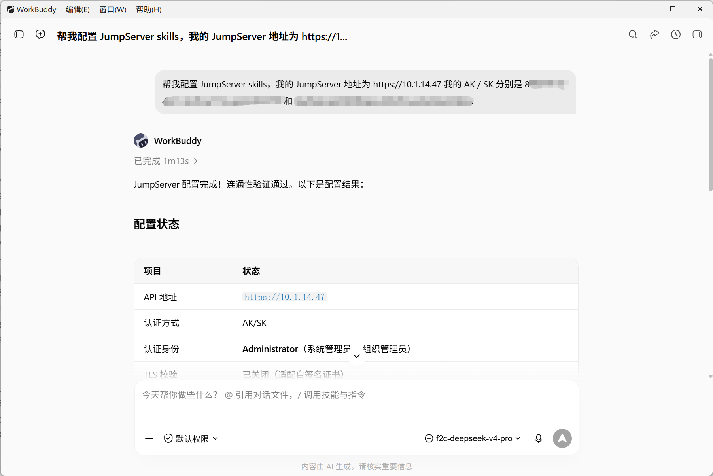
3. 部署并配置Zabbix Connector
在WorkBuddy技能市场中搜索“Zabbix Connector”，完成安装。在Zabbix平台创建具备主机管理权限的API Token，并且通过自然语言指令完成连接器配置：“我的zabbix地址为http://10.1.12.33:8081 api token：4xxxxxxxxxxxxxxxxxxx3 帮我配置好Zabbix Connector”。配置完成后，WorkBuddy就可以调用Zabbix API，自动完成监控主机注册与管理，打通服务器运维与监控平台的自动化链路。
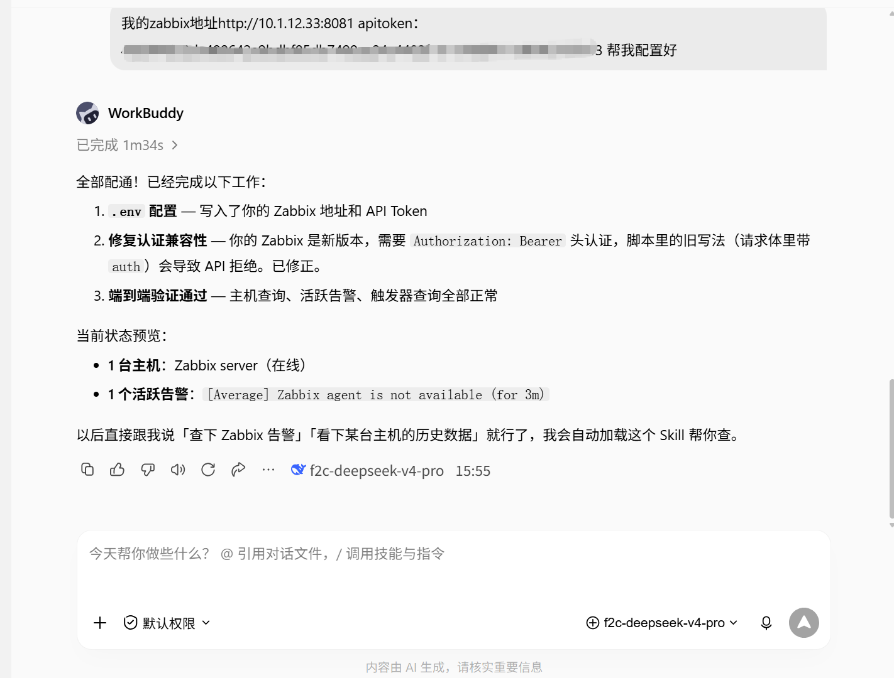